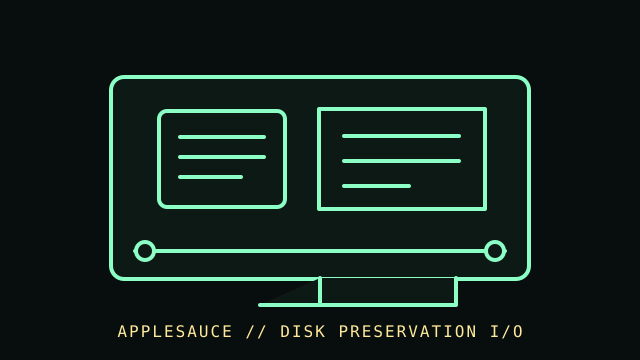

[ FLOPPY DRIVES // IDENTIFIED MODEL ]
Applesauce Floppy Disk Controller
Applesauce is a USB-connected floppy-disk controller and preservation system for supported Apple disks, used with a separate compatible drive. It is an acquisition interface, not a drive or disk emulator.

MODEL IDENTIFICATION: Applesauce FDC; document controller hardware revision, firmware/software, cable, drive model, Apple host family, and acquisition options. This record keeps variant-dependent claims qualified; verify the physical unit and applicable manual before connecting, servicing, or formatting media.
Recorded specifications
| Catalog model | Applesauce Floppy Disk Controller |
|---|---|
| Device type | USB floppy acquisition and preservation controller |
| Interface / connector | USB host connection plus drive-specific Apple floppy signals and cabling; power and wiring depend on controller/drive combination. |
| Media / formats | No media capacity is assigned to the controller. It acquires supported physical Apple floppy formats; image type, track coverage, and decoding depend on media, drive, hardware, and software version. |
| Revision caution | Match full model code, board/ROM/firmware revision, connector, cable, and documentation edition. Family-level ratings and host claims do not automatically apply to every unit. |
Host-controller and format compatibility
- Requires a separately connected compatible drive and supported host software. Confirm the exact disk family, drive, connector/pinout, and power procedure from Applesauce documentation.
- Apple II and Macintosh media families can use different mechanisms/recording schemes. Do not infer support for a disk type from the Apple brand alone.
- Preserve original captures, logs, controller/software versions, and checksums; converted images are derivatives and do not necessarily retain every flux-level property.
Preservation and safe cleaning
Disconnect all power before attaching the controller or drive. Do not insert contaminated media in a valuable mechanism; follow that drive’s own cleaning manual. Keep original acquisition files intact, checksum copies, and document retries/settings.
For a disk acquisition, record the physical media label and condition, drive/model/revision, controller, host, software/firmware, settings, and any errors. Keep original media and raw captures/images unchanged; checksum verified copies and document conversions as derivatives.
Primary manuals & standards/archive references
- Applesauce FDC — official documentation and project siteManufacturer/project documentation for supported hardware, software, and preservation workflow.
- Applesauce — official manuals/documentationConsult current hardware revision documentation for connections and supported drive/media types.
- Library of Congress — Digital format sustainabilityInstitutional preservation planning reference; not a device compatibility specification.
Source scope is stated per link. Prefer the matching manufacturer manual and revision over family summaries. Capacities and recording modes are omitted when not supported for the exact model and format.